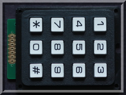

|
 |
 |
| pigpio pigpio C I/F pigpiod pigpiod C I/F Python pigs piscope Misc Examples Download FAQ Site Map | pigsIntroductionThe socket and pipe interfaces allow control of the Pi's GPIO by passing messages to the running pigpio library.The normal way to start the pigpio library would be as a daemon during boot. sudo pigpiodFeatureso hardware timed PWM on any of GPIO 0-31o hardware timed servo pulses on any of GPIO 0-31 o reading/writing all of the GPIO in a bank as one operation o individually setting GPIO modes, reading and writing o notifications when any of GPIO 0-31 change state o the construction of output waveforms with microsecond timing o I2C, SPI, and serial link wrappers o creating and running scripts on the pigpio daemon GPIOALL GPIO are identified by their Broadcom number.Usagepigs is a program and internally uses the socket interface to pigpio whereas /dev/pigpio uses the pipe interface.pigs and the pipe interface share the same commands and are invoked in a similar fashion from the command line. The pigpio library must be running, either by running a program linked with the library or starting the pigpio daemon (sudo pigpiod). pigs {command}+ echo "{command}+" >/dev/pigpio pigs will show the result of the command on screen. The pigs process returns an exit status (which can be displayed with the command echo $?). PIGS_OK 0The results of /dev/pigpio commands need to be read from /dev/pigout, e.g. cat /dev/pigout (try cat /dev/pigout& so that all subsequent results are shown on screen). In both cases if an error was detected a message will have been written to /dev/pigerr (try cat /dev/pigerr&). This is likely to be more informative than the message returned by pigs or the error code returned by the pipe interface. Several commands may be entered on a line. If present PROC and PARSE must be the last command on a line. E.g. pigs w 22 1 mils 1000 w 22 0is equivalent to pigs w 22 1and echo "m 4 w w 4 0 mils 250 m 4 r r 4" >/dev/pigpiois equivalent to echo "m 4 w" >/dev/pigpioNotesThe examples from now on will show the pigs interface but the same commands will also work on the pipe interface.pigs does not show the status of successful commands unless the command itself returns data. The status (0) will be returned to pigs but will be discarded. The status/data of each command sent to the pipe interface should be read from /dev/pigout. When a command takes a number as a parameter it may be entered as hex (precede by 0x), octal (precede by 0), or decimal. E.g. 23 is 23 decimal, 0x100 is 256 decimal, 070 is 56 decimal. Some commands can return a variable number of data bytes. By default this data is displayed as decimal. The pigs -a option can be used to force the display as ASCII and the pigs -x option can be used to force the display as hex. E.g. assuming the transmitted serial data is the letters ABCDEONM $ pigs slr 4 100Overview
CommandsBC1 bits - Clear specified GPIO in bank 1This command clears (sets low) the GPIO specified by bits in bank 1. Bank 1 consists of GPIO 0-31.Upon success nothing is returned. On error a negative status code will be returned. Example $ pigs bc1 0x400010 # clear GPIO 4 (1<<4) and 22 (1<<22)BC2 bits - Clear specified GPIO in bank 2This command clears (sets low) the GPIO specified by bits in bank 2. Bank 2 consists of GPIO 32-53.Upon success nothing is returned. On error a negative status code will be returned. Example $ pigs bc2 0x8000 # clear GPIO 47 (activity LED on A+/B+/Pi2/Pi3)BI2CC sda - Close bit bang I2CThis command signals that bit banging I2C on sda (and scl) is no longer required.Example $ pigs bi2cc 5BI2CO sda scl b - Open bit bang I2CThis command signals that GPIO sda and scl are to be used for bit banging I2C at b baud.Bit banging I2C allows for certain operations which are not possible with the standard I2C driver. o baud rates as low as 50 o repeated starts o clock stretching o I2C on any pair of spare GPIO The baud rate may be between 50 and 500000 bits per second. The GPIO used for SDA and SCL must have pull-ups to 3V3 connected. As a guide the hardware pull-ups on pins 3 and 5 are 1k8 in value. BI2CZ sda bvs - I2C bit bang multiple transactionsThis function executes a sequence of bit banged I2C operations. The operations to be performed are specified by the contents of bvs which contains the concatenated command codes and associated data.The following command codes are supported:
The address, read, and write commands take a parameter P. Normally P is one byte (0-255). If the command is preceded by the Escape command then P is two bytes (0-65535, least significant byte first). The address and flags default to 0. The address and flags maintain their previous value until updated. No flags are currently defined. Example Set address 0x53BR1 - Read bank 1 GPIOThis command read GPIO 0-31 (bank 1) and returns the levels as a 32-bit hexadecimal value.Example $ pigs br1BR2 - Read bank 2 GPIOThis command read GPIO 32-53 (bank 2) and returns the levels as a 32-bit hexadecimal value.Example $ pigs br2BS1 bits - Set specified GPIO in bank 1This command sets (sets high) the GPIO specified by bits in bank 1. Bank 1 consists of GPIO 0-31.Upon success nothing is returned. On error a negative status code will be returned. Example $ pigs bs1 16 # set GPIO 4 (1<<4)BS2 bits - Set specified GPIO in bank 2This command sets (sets high) the GPIO specified by bits in bank 2. Bank 2 consists of GPIO 32-53.Upon success nothing is returned. On error a negative status code will be returned. Example $ pigs bs2 0x40 # set GPIO 38 (enable high current mode A+/B+/Pi2/Pi3)BSCX bctl bvs - BSC I2C/SPI transferThis command performs a BSC I2C/SPI slave transfer as defined by bctl with data bvs.This function provides a low-level interface to the SPI/I2C Slave peripheral on the BCM chip. This peripheral allows the Pi to act as a hardware slave device on an I2C or SPI bus. This is not a bit bang version and as such is OS timing independent. The bus timing is handled directly by the chip. The output process is simple. You simply append data to the FIFO buffer on the chip. This works like a queue, you add data to the queue and the master removes it. I can't get SPI to work properly. I tried with a control word of 0x303 and swapped MISO and MOSI. The command sets the BSC mode and writes any data bvs to the BSC transmit FIFO. It returns the data count (at least 1 for the status word), the status word, followed by any data bytes read from the BSC receive FIFO. Note that the control word sets the BSC mode. The BSC will stay in that mode until a different control word is sent. For I2C use a control word of (I2C address << 16) + 0x305. E.g. to talk as I2C slave with address 0x13 use 0x130305. GPIO used for models other than those based on the BCM2711.
GPIO used for models based on the BCM2711 (e.g. the Pi4B).
When a zero control word is received the used GPIO will be reset to INPUT mode. The control word consists of the following bits. 22 21 20 19 18 17 16 15 14 13 12 11 10 9 8 7 6 5 4 3 2 1 0Bits 0-13 are copied unchanged to the BSC CR register. See pages 163-165 of the Broadcom peripherals document for full details.
The returned status has the following format 20 19 18 17 16 15 14 13 12 11 10 9 8 7 6 5 4 3 2 1 0Bits 0-15 are copied unchanged from the BSC FR register. See pages 165-166 of the Broadcom peripherals document for full details.
This example assumes that GPIO 2/3 are connected to GPIO 18/19 (GPIO 10/11 on the BCM2711). Example $ pigs bscx 0x130305 # start BSC as I2C slave 0x13BSPIC cs - Close bit bang SPIThis command stops bit banging SPI on a set of GPIO opened with BSPIO.The set of GPIO is specifed by cs. Upon success nothing is returned. On error a negative status code will be returned. Example $ pigs bspic 10BSPIO cs miso mosi sclk b spf - Open bit bang SPIThis command starts bit banging SPI on a group of GPIO with slave select cs, MISO miso, MOSI mosi, and clock sclk.Data will be transferred at baud b bits per second (which may be set in the range 50-250000). The flags spf may be used to modify the default behaviour of mode 0, active low chip select. The flags consists of the least significant 22 bits. 21 20 19 18 17 16 15 14 13 12 11 10 9 8 7 6 5 4 3 2 1 0mm defines the SPI mode. Mode POL PHAp is 0 if CS is active low (default) and 1 for active high. T is 1 if the least significant bit is transmitted on MOSI first, the default (0) shifts the most significant bit out first. R is 1 if the least significant bit is received on MISO first, the default (0) receives the most significant bit first. The other bits in flags should be set to zero. Upon success 0 is returned. On error a negative status code will be returned. If more than one device is connected to the SPI bus (defined by SCLK, MOSI, and MISO) each must have its own CS. Example $ pigs bspio 9 11 12 13 50000 0BSPIX cs bvs - SPI bit bang transferThis command writes bytes bvs to the bit bang SPI device associated with slave select cs. It returns the same number of bytes read from the device.Upon success the count of returned bytes followed by the bytes themselves is returned. On error a negative status code will be returned. Example $ pigs bspio 5 13 19 12 10000 0 # MCP4251 DACCF1 uvs - Custom function 1This command calls a user customised function. The meaning of any paramaters and the returned value is defined by the customiser.CF2 uvs - Custom function 2This command calls a user customised function. The meaning of any paramaters and the returned value is defined by the customiser.CGI - Configuration get internalsThis command returns the value of the internal library configuration settings.CSI v - Configuration set internalsThis command sets the value of the internal library configuration settings to v.EVM h bits - Set events to monitorThis command starts event reporting on handle h (returned by a prior call to NO).Upon success nothing is returned. On error a negative status code will be returned. The notification gets reports for each event specified by bits. Example $ pigs evm 0 -1 # Shorthand for events 0-31.EVT event - Trigger eventThis command triggers event event.One event, number 31, is predefined. This event is auto generated on BSC slave activity. Example $ pigs evt 12FC h - Close file handleThis command closes a file handle h previously opened with FO.Upon success nothing is returned. On error a negative status code will be returned. Example $ pigs fc 0 # First close okay.FG u stdy - Set a glitch filter on a GPIOLevel changes on the GPIO u are not reported unless the level has been stable for at least stdy microseconds. The level is then reported. Level changes of less than stdy microseconds are ignored.The filter only affects callbacks (including pipe notifications). The R/READ, BR1, and BR2 commands are not affected. Note, each (stable) edge will be timestamped stdy microseconds after it was first detected. Example $ pigs fg 4 250FL pat num - List files which match patternThis command returns a list of the files matching pat. Up to num bytes may be returned.Upon success the count of returned bytes followed by the matching files is returned. On error a negative status code will be returned. A newline (0x0a) character separates each file name. Only files which have a matching entry in /opt/pigpio/access may be listed. Suppose /opt/pigpio/access contains /sys/bus/w1/devices/28*/w1_slave r Example $ pigs -a fl "/sys/bus/w1/devices/28*/w1_slave" 5000FN u stdy actv - Set a noise filter on a GPIOLevel changes on the GPIO u are ignored until a level which has been stable for stdy microseconds is detected. Level changes on the GPIO are then reported for actv microseconds after which the process repeats.The filter only affects callbacks (including pipe notifications). The R/READ, BR1, and BR2 commands are not affected. Note, level changes before and after the active period may be reported. Your software must be designed to cope with such reports. Example $ pigs fn 7 250 1000FO file mode - Open a file in modeThis function returns a handle to a file file opened in a specified mode mode.Upon success a handle (>=0) is returned. On error a negative status code will be returned. File A file may only be opened if permission is granted by an entry in /opt/pigpio/access. This is intended to allow remote access to files in a more or less controlled manner. Each entry in /opt/pigpio/access takes the form of a file path which may contain wildcards followed by a single letter permission. The permission may be R for read, W for write, U for read/write, and N for no access. Where more than one entry matches a file the most specific rule applies. If no entry matches a file then access is denied. Suppose /opt/pigpio/access contains the following entries /home/* nFiles may be written in directory dir_1 with the exception of file.txt. Files may be read in directory dir_2. Files may be read and written in directory dir_3. If a directory allows read, write, or read/write access then files may be created in that directory. In an attempt to prevent risky permissions the following paths are ignored in /opt/pigpio/access. a path containing ..Mode The mode may have the following values.
The following values may be or'd into the mode.
Newly created files are owned by root with permissions owner read and write. Example $ ls /ram/*.cFR h num - Read bytes from file handleThis command returns up to num bytes of data read from the file associated with handle h.Upon success the count of returned bytes followed by the bytes themselves is returned. On error a negative status code will be returned. Example $ pigs fr 0 10FS h num from - Seek to file handle positionThis command seeks to a position within the file associated with handle h.The number of bytes to move is num. Positive offsets move forward, negative offsets backwards. The move start position is determined by from as follows.
Upon success the new byte position within the file (>=0) is returned. On error a negative status code will be returned. Example $ pigs fs 0 200 0 # Seek to start of file plus 200FW h bvs - Write bytes to file handleThis command writes bytes bvs to the file associated with handle h.Upon success nothing is returned. On error a negative status code will be returned. Example $ pigs fw 0 23 45 67 89GDC u - Get GPIO PWM dutycycleThis command returns the PWM dutycycle in use on GPIO u.Upon success the dutycycle is returned. On error a negative status code will be returned. For normal PWM the dutycycle will be out of the defined range for the GPIO (see PRG). If a hardware clock is active on the GPIO the reported dutycycle will be 500000 (500k) out of 1000000 (1M). If hardware PWM is active on the GPIO the reported dutycycle will be out of a 1000000 (1M). Example $ pigs p 4 129GPW u - Get GPIO servo pulsewidthThis command returns the servo pulsewidth in use on GPIO u.Upon success the servo pulsewidth is returned. On error a negative status code will be returned. Example $ pigs s 4 1235H/HELP - Display command helpThis command displays a brief list of the commands and their parameters.Example $ pigs hHC g cf - Set hardware clock frequencyThis command sets the hardware clock associated with GPIO g to frequency cf. Frequencies above 30MHz are unlikely to work.Upon success nothing is returned. On error a negative status code will be returned. Example $ pigs hc 4 5000 # start a 5 KHz clock on GPIO 4 (clock 0)The same clock is available on multiple GPIO. The latest frequency setting will be used by all GPIO which share a clock. The GPIO must be one of the following.
Access to clock 1 is protected by a password as its use will likely crash the Pi. The password is given by or'ing 0x5A000000 with the GPIO number. HP g pf pdc - Set hardware PWM frequency and dutycycleThis command sets the hardware PWM associated with GPIO g to frequency pf with dutycycle pdc. Frequencies above 30MHz are unlikely to work.NOTE: Any waveform started by WVTX, WVTXR, or WVCHA will be cancelled. This function is only valid if the pigpio main clock is PCM. The main clock defaults to PCM but may be overridden when the pigpio daemon is started (option -t). Upon success nothing is returned. On error a negative status code will be returned. $ pigs hp 18 100 800000 # 80% dutycycleThe same PWM channel is available on multiple GPIO. The latest frequency and dutycycle setting will be used by all GPIO which share a PWM channel. The GPIO must be one of the following.
The actual number of steps beween off and fully on is the integral part of 250M/pf (375M/pf for the BCM2711). The actual frequency set is 250M/steps (375M/steps for the BCM2711). There will only be a million steps for a pf of 250 (375 for the BCM2711). Lower frequencies will have more steps and higher frequencies will have fewer steps. pdc is automatically scaled to take this into account. HWVER - Get hardware versionThis command returns the hardware revision of the Pi.The hardware revision is found in the last 4 characters on the revision line of /proc/cpuinfo. If the hardware revision can not be found or is not a valid hexadecimal number the command returns 0. The revision number can be used to determine the assignment of GPIO to pins (see g). There are currently three types of board. Type 1 boards have hardware revision numbers of 2 and 3. Type 2 boards have hardware revision numbers of 4, 5, 6, and 15. Type 3 boards have hardware revision numbers of 16 or greater. for "Revision : 0002" the command returns 2. for "Revision : 000f" the command returns 15. for "Revision : 000g" the command returns 0. Example $ pigs hwver # On a B+I2CC h - Close I2C handleThis command closes an I2C handle h previously opened with I2CO.Upon success nothing is returned. On error a negative status code will be returned. Example $ pigs i2cc 0 # First close okay.I2CO ib id if - Open I2C bus and device with flagsThis command returns a handle to access device id on I2C bus ib. The device is opened with flags if.Physically buses 0 and 1 are available on the Pi. Higher numbered buses will be available if a kernel supported bus multiplexor is being used. The GPIO used are given in the following table.
No flags are currently defined. The parameter if should be 0. Upon success the next free handle (>=0) is returned. On error a negative status code will be returned. Example $ pigs i2co 1 0x70 0 # Bus 1, device 0x70, flags 0.I2CPC h r wv - smb Process Call: exchange register with wordThis command writes wv to register r of the I2C device associated with handle h and returns a 16-bit word read from the device.Upon success a value between 0 and 65535 will be returned. On error a negative status code will be returned. Example $ pigs i2cpc 0 37 43210I2CPK h r bvs - smb Block Process Call: exchange data bytes with registerThis command writes the data bytes bvs to register r of the I2C device associated with handle h and returns a device specific number of bytes.Upon success the count of returned bytes followed by the bytes themselves is returned. On error a negative status code will be returned. Example $ pigs i2cpk 0 0 0x11 0x12I2CRB h r - smb Read Byte Data: read byte from registerThis command returns a single byte read from register r of the I2C device associated with handle h.Upon success a value between 0 and 255 will be returned. On error a negative status code will be returned. Example $ pigs i2crb 0 0I2CRD h num - i2c Read deviceThis command returns num bytes read from the I2C device associated with handle h.Upon success the count of returned bytes followed by the bytes themselves is returned. On error a negative status code will be returned. This command operates on the raw I2C device. The maximum value of the parameter num is dependent on the I2C drivers and the device itself. pigs imposes a limit of about 8000 bytes. Example $ pigs i2crd 0 16I2CRI h r num - smb Read I2C Block Data: read bytes from registerThis command returns num bytes from register r of the I2C device associated with handle h.Upon success the count of returned bytes followed by the bytes themselves is returned. On error a negative status code will be returned. The parameter num may be 1-32. Example $ pigs i2cri 0 0 16I2CRK h r - smb Read Block Data: read data from registerThis command returns between 1 and 32 bytes read from register r of the I2C device associated with handle h.Upon success the count of returned bytes followed by the bytes themselves is returned. On error a negative status code will be returned. The number of bytes of returned data is specific to the device and register. Example $ pigs i2crk 0 0I2CRS h - smb Read Byte: read byteThis command returns a single byte read from the I2C device associated with handle h.Upon success a value between 0 and 255 will be returned. On error a negative status code will be returned. Example $ pigs i2crs 0I2CRW h r - smb Read Word Data: read word from registerThis command returns a single 16 bit word read from register r of the I2C device associated with handle h.Upon success a value between 0 and 65535 will be returned. On error a negative status code will be returned. Example $ pigs i2crw 0 0I2CWB h r bv - smb Write Byte Data: write byte to registerThis command writes a single byte bv to register r of the I2C device associated with handle h.Upon success nothing is returned. On error a negative status code will be returned. Example $ pigs i2cwb 0 10 0x54I2CWD h bvs - i2c Write deviceThis command writes a block of bytes bvs to the I2C device associated with handle h.Upon success nothing is returned. On error a negative status code will be returned. The number of bytes which may be written in one transaction is dependent on the I2C drivers and the device itself. pigs imposes a limit of about 500 bytes. This command operates on the raw I2C device. Example $ pigs i2cwd 0 0x01 0x02 0x03 0x04I2CWI h r bvs - smb Write I2C Block DataThis command writes between 1 and 32 bytes bvs to register r of the I2C device associated with handle h.Upon success nothing is returned. On error a negative status code will be returned. Example $ pigs i2cwi 0 4 0x01 0x04 0xc0I2CWK h r bvs - smb Write Block Data: write data to registerThis command writes between 1 and 32 bytes bvs to register r of the I2C device associated with handle h.Upon success nothing is returned. On error a negative status code will be returned. Example pigs i2cwk 0 4 0x01 0x04 0xc0I2CWQ h bit - smb Write Quick: write bitThis command writes a single bit to the I2C device associated with handle h.Upon success nothing is returned. On error a negative status code will be returned. Example $ pigs i2cwq 0 1I2CWS h bv - smb Write Byte: write byteThis command writes a single byte bv to the I2C device associated with handle h.Upon success nothing is returned. On error a negative status code will be returned. Example $ pigs i2cws 0 0x12I2CWW h r wv - smb Write Word Data: write word to registerThis command writes a single 16 bit word wv to register r of the I2C device associated with handle h.Upon success nothing is returned. On error a negative status code will be returned. Example $ pigs i2cww 0 0 0xffffI2CZ h bvs - Performs multiple I2C transactionsThis command executes a sequence of I2C operations. The operations to be performed are specified by the contents of bvs which contains the concatenated command codes and associated data.The following command codes are supported:
The address, read, and write commands take a parameter P. Normally P is one byte (0-255). If the command is preceded by the Escape command then P is two bytes (0-65535, least significant byte first). The address defaults to that associated with the handle h. The flags default to 0. The address and flags maintain their previous value until updated. Example Set address 0x53, write 0x32, read 6 bytesM/MODES g m - Set GPIO modeThis command sets GPIO g to mode m, typically input (read) or output (write).Upon success nothing is returned. On error a negative status code will be returned. Each GPIO can be configured to be in one of 8 different modes. The modes are named Input, Output, ALT0, ALT1, ALT2, ALT3, ALT4, and ALT5. To set the mode use the code for the mode.
Example $ pigs m 4 r # Input (read)MG/MODEG g - Get GPIO modeThis command returns the current mode of GPIO g.Upon success the value of the GPIO mode is returned. On error a negative status code will be returned.
Example $ pigs mg 4MICS v - Microseconds delayThis command delays execution for v microseconds.Upon success nothing is returned. On error a negative status code will be returned. The main use of this command is expected to be within Scripts. Example $ pigs mics 20 # Delay 20 microseconds.MILS v - Milliseconds delayThis command delays execution for v milliseconds.Upon success nothing is returned. On error a negative status code will be returned. Example $ pigs mils 2000 # Delay 2 seconds.NB h bits - Start notificationThis command starts notifications on handle h returned by a prior call to NO.Upon success nothing is returned. On error a negative status code will be returned. The notification gets state changes for each GPIO specified by bits. Example $ pigs nb 0 -1 # Shorthand for GPIO 0-31.NC h - Close notificationThis command stops notifications on handle h returned by a prior call to NO and releases the handle for reuse.Upon success nothing is returned. On error a negative status code will be returned. Example $ pigs nc 0 # First call succeeds.NO - Request a notificationThis command requests a free notification handle.A notification is a method for being notified of GPIO state changes via a pipe. Upon success the command returns a handle greater than or equal to zero. On error a negative status code will be returned. Notifications for handle x will be available at the pipe named /dev/pigpiox (where x is the handle number). E.g. if the command returns 15 then the notifications must be read from /dev/pigpio15. Example $ pigs noNP h - Pause notificationThis command pauses notifications on handle h returned by a prior call to NO.Upon success nothing is returned. On error a negative status code will be returned. Notifications for the handle are suspended until a new NB command is given for the handle. Example $ pigs np 0P/PWM u v - Set GPIO PWM valueThis command starts PWM on GPIO u with dutycycle v. The dutycycle varies from 0 (off) to range (fully on). The range defaults to 255.Upon success nothing is returned. On error a negative status code will be returned. This and the servo functionality use the DMA and PWM or PCM peripherals to control and schedule the pulsewidths and dutycycles. The PRS command may be used to change the default range of 255. Example $ pigs p 4 64 # Start PWM on GPIO 4 with 25% dutycyclePADG pad - Get pad drive strengthThis command gets the pad drive strength padma in mA.Returns the pad drive strength if OK. On error a negative status code will be returned.
Example $ pigs padg 0PADS pad padma - Set pad drive strengthThis command sets the pad drive strength padma in mA.Upon success nothing is returned. On error a negative status code will be returned.
Example $ pigs pads 0 16PARSE t - Validate scriptValidates the text t of a script without storing the script.Upon success nothing is returned. On error a list of detected script errors will be given. See Scripts. This command may be used to find script syntax faults. Example $ pigs parse tag 100 w 22 1 mils 200 w 22 0 mils 800 jmp 100PFG u - Get GPIO PWM frequencyThis command returns the PWM frequency in Hz used for GPIO u.Upon success the PWM frequency is returned. On error a negative status code will be returned. For normal PWM the frequency will be that defined for the GPIO by PFS. If a hardware clock is active on the GPIO the reported frequency will be that set by HC. If hardware PWM is active on the GPIO the reported frequency will be that set by HP. Example $ pigs pfg 4PFS u v - Set GPIO PWM frequencyThis command sets the PWM frequency v to be used for GPIO u.The numerically closest frequency to v will be selected. Upon success the new frequency is returned. On error a negative status code will be returned. If PWM is currently active on the GPIO it will be switched off and then back on at the new frequency. Each GPIO can be independently set to one of 18 different PWM frequencies. The selectable frequencies depend upon the sample rate which may be 1, 2, 4, 5, 8, or 10 microseconds (default 5). The sample rate is set when the pigpio daemon is started. The frequencies for each sample rate are: HertzExample pigs pfs 4 0 # 0 selects the lowest frequency.PIGPV - Get pigpio library versionThis command returns the pigpio library version.Example $ pigs pigpvPRG u - Get GPIO PWM rangeThis command returns the dutycycle range for GPIO u.Upon success the range is returned. On error a negative status code will be returned. If a hardware clock or hardware PWM is active on the GPIO the reported range will be 1000000 (1M). Example $ pigs prg 4PROC t - Store scriptThis command stores a script t for later execution.If the script is valid a script id (>=0) is returned which is passed to the other script commands. On error a negative status code will be returned. See Scripts. Example $ pigs proc tag 123 w 4 0 mils 200 w 4 1 mils 300 dcr p0 jp 123PROCD sid - Delete scriptThis command deletes script sid.Upon success nothing is returned. On error a negative status code will be returned. See Scripts. Example $ pigs procd 1PROCP sid - Get script status and parametersThis command returns the status of script sid as well as the current value of its 10 parameters.Upon success the script status and parameters are returned. On error a negative status code will be returned. The script status may be one of
See Scripts. Example $ pigs procp 0PROCR sid pars - Run scriptThis command runs stored script sid passing it up to 10 optional parameters.Upon success nothing is returned. On error a negative status code will be returned. See Scripts. Example $ pigs proc tag 123 w 4 0 mils 200 w 4 1 mils 300 dcr p0 jp 123PROCS sid - Stop scriptThis command stops a running script sid.Upon success nothing is returned. On error a negative status code will be returned. See Scripts. Example $ pigs procs 0PROCU sid pars - Set script parametersThis command sets the parameters of a stored script sid passing it up to 10 parameters.Upon success nothing is returned. On error a negative status code will be returned. See Scripts. Example $ pigs proc tag 0 hp 18 p0 p1 mils 1000 jmp 0PRRG u - Get GPIO PWM real rangeThis command returns the real underlying range used by GPIO u.If a hardware clock is active on the GPIO the reported real range will be 1000000 (1M). If hardware PWM is active on the GPIO the reported real range will be approximately 250M divided by the set PWM frequency. On error a negative status code will be returned. See PRS. Example $ pigs prrg 17PRS u v - Set GPIO PWM rangeThis command sets the dutycycle range v to be used for GPIO u. Subsequent uses of command P/PWM will use a dutycycle between 0 (off) and v (fully on).Upon success the real underlying range used by the GPIO is returned. On error a negative status code will be returned. If PWM is currently active on the GPIO its dutycycle will be scaled to reflect the new range. The real range, the number of steps between fully off and fully on for each frequency, is given in the following table.
The real value set by PRS is (dutycycle * real range) / range. See PRRG Example $ pigs prs 18 1000PUD g p - Set GPIO pull up/downThis command sets the internal pull/up down for GPIO g to mode p.Upon success nothing is returned. On error a negative status code will be returned. The mode may be pull-down (D), pull-up (U), or off (O). Example $ pigs pud 4 d # Set pull-down on GPIO 4.R/READ g - Read GPIO levelThis reads the current level of GPIO g.Upon success the current level is returned. On error a negative status code will be returned. Example $ pigs r 17 # Get level of GPIO 17.S/SERVO u v - Set GPIO servo pulsewidthThis command starts servo pulses of v microseconds on GPIO u.Upon success nothing is returned. On error a negative status code will be returned. The servo pulsewidth may be 0 (off), 500 (most anti-clockwise) to 2500 (most clockwise). The range supported by servos varies and should probably be determined by experiment. Generally values between 1000-2000 should be safe. A value of 1500 should always be safe and represents the mid-point of rotation. You can DAMAGE a servo if you command it to move beyond its limits. Example $ pigs SERVO 17 1500This example causes an on pulse of 1500 microseconds duration to be transmitted on GPIO 17 at a rate of 50 times per second. This will command a servo connected to GPIO 17 to rotate to its mid-point. Example pigs s 17 0 # Switch servo pulses off.SERC h - Close serial handleThis command closes a serial handle h previously opened with SERO.Upon success nothing is returned. On error a negative status code will be returned. Example $ pigs serc 0 # First close okay.SERDA h - Check for serial data ready to readThis command returns the number of bytes of data available to be read from the serial device associated with handle h.Upon success the count of bytes available to be read is returned (which may be 0). On error a negative status code will be returned. Example $ pigs serda 0SERO dev b sef - Open serial device dev at baud b with flagsThis command opens the serial dev at b bits per second.No flags are currently defined. sef should be set to zero. Upon success a handle (>=0) is returned. On error a negative status code will be returned. The device name must start with /dev/tty or /dev/serial. The baud rate must be one of 50, 75, 110, 134, 150, 200, 300, 600, 1200, 1800, 2400, 4800, 9600, 19200, 38400, 57600, 115200, or 230400. Example $ pigs sero /dev/ttyAMA0 9600 0SERR h num - Read bytes from serial handleThis command returns up to num bytes of data read from the serial device associated with handle h.Upon success the count of returned bytes followed by the bytes themselves is returned. On error a negative status code will be returned. Example $ pigs serr 0 10SERRB - Read byte from serial handleThis command returns a byte of data read from the serial device associated with handle h.Upon success a number between 0 and 255 is returned. On error a negative status code will be returned. Example $ pigs serrb 0SERW h bvs - Write bytes to serial handleThis command writes bytes bvs to the serial device associated with handle h.Upon success nothing is returned. On error a negative status code will be returned. Example $ pigs serw 0 23 45 67 89SERWB h bv - Write byte to serial handleThis command writes a single byte bv to the serial device associated with handle h.Upon success nothing is returned. On error a negative status code will be returned. Example $ pigs serwb 0 23SHELL name str - Execute a shell commandThis command uses the system call to execute a shell script name with the given string str as its parameter.The exit status of the system call is returned if OK, otherwise PI_BAD_SHELL_STATUS. name must exist in /opt/pigpio/cgi and must be executable. The returned exit status is normally 256 times that set by the shell script exit function. If the script can't be found 32512 will be returned. The following table gives some example returned statuses.
Example # pass two parameters, hello and worldSLR u num - Read bit bang serial data from GPIOThis command returns up to num bytes of bit bang serial data read from GPIO u.Upon success the count of returned bytes followed by the bytes themselves is returned. On error a negative status code will be returned. The GPIO u should have been initialised with the SLRO command. The bytes returned for each character depend upon the number of data bits db specified in the SLRO command. For db 1-8 there will be one byte per character. For db 9-16 there will be two bytes per character. For db 17-32 there will be four bytes per character. Example $ pigs slr 15 20SLRC u - Close GPIO for bit bang serial dataThis command closes GPIO u for reading bit bang serial data.Upon success nothing is returned. On error a negative status code will be returned. Example $ pigs slrc 23SLRI u v - Sets bit bang serial data logic levelsThis command sets the logic level for reading bit bang serial data on GPIO u.Upon success nothing is returned. On error a negative status code will be returned. The invert parameter v is 1 for inverted signal, 0 for normal. Example $ pigs slri 17 1 # invert logic on GPIO 17SLRO u b db - Open GPIO for bit bang serial dataThis command opens GPIO u for reading bit bang serial data at b baud and db data bits.Upon success nothing is returned. On error a negative status code will be returned. The baud rate may be between 50 and 250000 bits per second. The received data is held in a cyclic buffer. It is the user's responsibility to read the data (with SLR) in a timely fashion. Example $ pigs slro 23 19200 8SPIC h - SPI close handleThis command closes the SPI handle h returned by a prior call to SPIO.Upon success nothing is returned. On error a negative status code will be returned. Example $ pigs spic 1SPIO c b spf - SPI open channel at baud b with flagsThis command returns a handle to a SPI device on channel c.Data will be transferred at b bits per second. The flags spf may be used to modify the default behaviour of 4-wire operation, mode 0, active low chip select. Speeds between 32kbps and 125Mbps are allowed. Speeds above 30Mbps are unlikely to work. The Pi has two SPI peripherals: main and auxiliary. The main SPI has two chip selects (channels), the auxiliary has three. The auxiliary SPI is available on all models but the A and B. The GPIO used are given in the following table.
The flags consists of the least significant 22 bits. 21 20 19 18 17 16 15 14 13 12 11 10 9 8 7 6 5 4 3 2 1 0mm defines the SPI mode. Warning: modes 1 and 3 do not appear to work on the auxiliary SPI. Mode POL PHApx is 0 if CEx is active low (default) and 1 for active high. ux is 0 if the CEx GPIO is reserved for SPI (default) and 1 otherwise. A is 0 for the main SPI, 1 for the auxiliary SPI. W is 0 if the device is not 3-wire, 1 if the device is 3-wire. Main SPI only. nnnn defines the number of bytes (0-15) to write before switching the MOSI line to MISO to read data. This field is ignored if W is not set. Main SPI only. T is 1 if the least significant bit is transmitted on MOSI first, the default (0) shifts the most significant bit out first. Auxiliary SPI only. R is 1 if the least significant bit is received on MISO first, the default (0) receives the most significant bit first. Auxiliary SPI only. bbbbbb defines the word size in bits (0-32). The default (0) sets 8 bits per word. Auxiliary SPI only. The SPIR, SPIW, and SPIX commands transfer data packed into 1, 2, or 4 bytes according to the word size in bits. For bits 1-8 there will be one byte per character. For bits 9-16 there will be two bytes per character. For bits 17-32 there will be four bytes per character. Multi-byte transfers are made in least significant byte first order. E.g. to transfer 32 11-bit words 64 bytes need to be sent. E.g. to transfer the 14 bit value 0x1ABC send the bytes 0xBC followed by 0x1A. The other bits in flags should be set to zero. Upon success a handle (>=0) is returned. On error a negative status code will be returned. Example $ pigs spio 0 100000 3 # Open channel 0 at 100kbps in mode 3.SPIR h num - SPI read bytes from handleThis command returns num bytes read from the SPI device associated with handle h.Upon success the count of returned bytes followed by the bytes themselves is returned. On error a negative status code will be returned. Example $ pigs spir 0 10 # Read 10 bytes from the SPI device.SPIW h bvs - SPI write bytes to handleThis command writes bytes bvs to the SPI device associated with handle h.Upon success nothing is returned. On error a negative status code will be returned. Example $ pigs spiw 0 0x22 0x33 0xcc 0xffSPIX h bvs - SPI transfer bytes to handleThis command writes bytes bvs to the SPI device associated with handle h. It returns the same number of bytes read from the device.Upon success the count of returned bytes followed by the bytes themselves is returned. On error a negative status code will be returned. Example $ pigs spix 0 0x22 0x33 0xcc 0xffT/TICK - Get current tickThis command returns the current system tick.Tick is the number of microseconds since system boot. As tick is an unsigned 32 bit quantity it wraps around after 2^32 microseconds, which is approximately 1 hour 12 minutes. Example $ pigs t mils 1000 tTRIG u pl L - Send a trigger pulseThis command sends a trigger pulse of pl microseconds at level L to GPIO u.Upon success nothing is returned. On error a negative status code will be returned. The GPIO is set to not level at the end of the pulse. Example $ pigs trig 4 10 1W/WRITE g L - Write GPIO levelThis command sets GPIO g to level L. The level may be 0 (low, off, clear) or 1 (high, on, set).Upon success nothing is returned. On error a negative status code will be returned. Example $ pigs w 23 0WDOG u v - Set GPIO watchdogThis command sets a watchdog of v milliseconds on GPIO u.Upon success nothing is returned. On error a negative status code will be returned. The watchdog is nominally in milliseconds. One watchdog may be registered per GPIO. The watchdog may be cancelled by setting timeout to 0. Once a watchdog has been started monitors of the GPIO will be triggered every timeout interval after the last GPIO activity. The watchdog expiry will be indicated by a special TIMEOUT value. Example $ pigs wdog 23 90000This example causes a report to be written to any notification pipes listening on GPIO 23 whenever GPIO 23 changes state or approximately every 9000 ms. WVAG trips - Add generic pulses to waveformThis command adds 1 one or more triplets trips of GPIO on, GPIO off, delay to the existing waveform (if any).Upon success the total number of pulses in the waveform so far is returned. On error a negative status code will be returned. The triplets will be added at the start of the existing waveform. If they are to start offset from the start then the first triplet should consist solely of a delay i.e. 0 0 offset. Example $ pigs wvag 0x10 0x80 1000 0x80 0x10 9000WVAS u b db sb o bvs - Add serial data to waveformThis command adds a waveform representing serial data bvs to GPIO u at b baud to the existing waveform (if any). The serial data starts o microseconds from the start of the waveform.Upon success the total number of pulses in the waveform so far is returned. On error a negative status code will be returned. The serial data is formatted as one start bit, db data bits, and sb/2 stop bits. The baud rate may be between 50 and 1000000 bits per second. It is legal to add serial data streams with different baud rates to the same waveform. The bytes required for each character depend upon db. For db 1-8 there will be one byte per character. For db 9-16 there will be two bytes per character. For db 17-32 there will be four bytes per character. Example $ pigs wvas 4 9600 8 2 0 0x30 0x31 0x32 0x33WVTAT - Returns the current transmitting waveformThis command returns the id of the waveform currently being transmitted.Returns the waveform id or one of the following special values: 9998 - transmitted wave not found 9999 - no wave being transmitted Example $ pigs wvtatWVBSY - Check if waveform is being transmittedThis command checks to see if a waveform is currently being transmitted.Returns 1 if a waveform is currently being transmitted, otherwise 0. Example $ pigs wvbsyWVCHA bvs - Transmits a chain of waveformsThis command transmits a chain of waveforms.NOTE: Any hardware PWM started by HP will be cancelled. The waves to be transmitted are specified by the contents of bvs which contains an ordered list of wave_ids and optional command codes and related data. Upon success 0 is returned. On error a negative status code will be returned. Each wave is transmitted in the order specified. A wave may occur multiple times per chain. A blocks of waves may be transmitted multiple times by using the loop commands. The block is bracketed by loop start and end commands. Loops may be nested. Delays between waves may be added with the delay command. The following command codes are supported:
If present Loop Forever must be the last entry in the chain. The code is currently dimensioned to support a chain with roughly 600 entries and 20 loop counters. Example #!/bin/bashWVCLR - Clear all waveformsThis command clears all waveforms.Nothing is returned. Example $ pigs wvclrWVCRE - Create a waveformThis command creates a waveform from the data provided by the prior calls to the WVAG and WVAS commands.Upon success a wave id (>=0) is returned. On error a negative status code will be returned. The data provided by the WVAG and WVAS commands is consumed by this command. As many waveforms may be created as there is space available. The wave id is passed to WVTX or WVTXR to specify the waveform to transmit. Normal usage would be Step 1. WVCLR to clear all waveforms and added data. Step 2. WVAG/WVAS calls to supply the waveform data. Step 3. WVCRE to create the waveform and get a unique id. Repeat steps 2 and 3 as needed. Step 4. WVTX or WVTXR with the id of the waveform to transmit. A waveform comprises of one or more pulses. A pulse specifies 1) the GPIO to be switched on at the start of the pulse. 2) the GPIO to be switched off at the start of the pulse. 3) the delay in microseconds before the next pulse. Any or all the fields can be zero. It doesn't make any sense to set all the fields to zero (the pulse will be ignored). When a waveform is started each pulse is executed in order with the specified delay between the pulse and the next. Example $ pigs wvas 4 9600 0 23 45 67 89 90WVCAP - Create a waveform of fixed sizeSimilar to WVCRE, this command creates a waveform but pads the consumed resources to a fixed size, specified as a percent of total resource. Padded waves of equal size can be re-cycled efficiently allowing newly created waves to re-use the resources of deleted waves of the same dimension.Upon success a wave id (>=0) is returned. On error a negative status code will be returned. The data provided by the WVAG and WVAS commands are consumed by this command. As many waveforms may be created as there is space available. The wave id is passed to WVTX or WVTXR to specify the waveform to transmit. Normal usage would be Step 1. WVCLR to clear all waveforms and added data. Step 2. WVAG/WVAS calls to supply the waveform data. Step 3. WVCAP to create a waveform of a uniform size. Step 4. WVTX or WVTXR with the id of the waveform to transmit. Repeat steps 2 - 4 as needed. Step 5. Any wave id can now be deleted and another wave of the same size can be created in its place. Example # Create a wave that consumes 50% of the total resource:WVDEL wid - Delete selected waveformThis command deletes the waveform with id wid.The wave is flagged for deletion. The resources used by the wave will only be reused when either of the following apply. - all waves with higher numbered wave ids have been deleted or have been flagged for deletion. - a new wave is created which uses exactly the same resources as the current wave (see the C source for gpioWaveCreate for details). Upon success nothing is returned. On error a negative status code will be returned. Example $ pigs wvdel 0WVHLT - Stop waveformThis command aborts the transmission of the current waveform.Nothing is returned. This command is intended to stop a waveform started in the repeat mode. Example $ pigs wvhltWVNEW - Initialise a new waveformThis clears any existing waveform data ready for the creation of a new waveform.Nothing is returned. Example $ pigs wvnewWVSC ws - Get waveform DMA CB statsThe statistic requested by ws is returned.ws identifies the subcommand as follows. 0 Get Cbs 1 Get High Cbs 2 Get Max Cbs Example $ pigs wvas 4 9600 0 23 45 67 89 90WVSM ws - Get waveform time statsThe statistic requested by ws is returned.ws identifies the subcommand as follows. 0 Get Micros 1 Get High Micros 2 Get Max Micros Example $ pigs wvsm 0WVSP ws - Get waveform pulse statsThe statistic requested by ws is returned.ws identifies the subcommand as follows. 0 Get Pulses 1 Get High Pulses 2 Get Max Pulses Example $ pigs wvsp 0WVTX wid - Transmits waveform onceThis command transmits the waveform with id wid once.NOTE: Any hardware PWM started by HP will be cancelled. Upon success the number of DMA control blocks in the waveform is returned. On error a negative status code will be returned. Example $ pigs wvtx 1WVTXM wid wmde - Transmits waveform using modeThis command transmits the waveform with id wid using mode wmde.The mode may be send once (0), send repeatedly (1), send once but first sync with previous wave (2), or send repeatedly but first sync with previous wave (3). WARNING: bad things may happen if you delete the previous waveform before it has been synced to the new waveform. NOTE: Any hardware PWM started by HP will be cancelled. Upon success the number of DMA control blocks in the waveform is returned. On error a negative status code will be returned. Example $ pigs wvtxm 1 3WVTXR wid - Transmits waveform repeatedlyThis command transmits the waveform with id wid repeatedly.NOTE: Any hardware PWM started by HP will be cancelled. Upon success the number of DMA control blocks in the waveform is returned. On error a negative status code will be returned. Example $ pigs wvtxr 1Parametersactv - 0-1000000The number of microseconds level changes are reported for once a noise filter has been triggered (by stdy microseconds of a stable level).b - baudThe command expects the baud rate in bits per second for the transmission of serial data (I2C/SPI/serial link, waves).bctl - BSC control wordThe command expects a BSC control word, see BSCX.bit - bit value (0-1)The command expects 0 or 1.bits - a bit maskA mask is used to select one or more GPIO. A GPIO is selected if bit (1<<GPIO) is set in the mask.E.g. a mask of 6 (binary 110) select GPIO 1 and 2, a mask of 0x103 (binary 100000011) selects GPIO 0, 1, and 8. bv - a byte value (0-255)The command expects a byte value.bvs - byte values (0-255)The command expects one or more byte values.c - SPI channel (0-1)The command expects a SPI channel.cf - hardware clock frequency (4689-250M, 13184-375M for the BCM2711)The command expects a frequency.cs - GPIO (0-31)The GPIO used for the slave select signal when bit banging SPI.db - serial data bits (1-32)The command expects the number of data bits per serial character.dev - a tty serial device (/dev/tty* or /dev/serial*)The command expects the name of a tty serial device, e.g./dev/ttyAMA0event - 0-31An event is a signal used to inform one or more consumers to start an action.file - a file nameThe file name must match an entry in /opt/pigpio/access.from - 0-2Position to seek from FS.
g - GPIO (0-53)The command expects a GPIO.There are 54 General Purpose Input Outputs (GPIO) named gpio0 through gpio53. They are split into two banks. Bank 1 consists of gpio0 through gpio31. Bank 2 consists of gpio32 through gpio53. All the GPIO which are safe for the user to read and write are in bank 1. Not all GPIO in bank 1 are safe though. Type 1 boards have 17 safe GPIO. Type 2 boards have 21. Type 3 boards have 26. See HWVER. The user GPIO are marked with an X in the following table.
You are not prevented from writing to unsafe GPIO. The consequences of doing so range from no effect, to a crash, or corrupted data. h - handle (>=0)The command expects a handle.A handle is a number referencing an object opened by one of FO, I2CO, NO, SERO, SPIO. ib - I2C bus (>=0)The command expects an I2C bus number.id - I2C device (0-0x7F)The command expects the address of an I2C device.if - I2C flags (0)The command expects an I2C flags value. No flags are currently defined.L - level (0-1)The command expects a GPIO level.m - mode (RW540123)The command expects a mode character.Each GPIO can be configured to be in one of 8 different modes. The modes are named Input, Output, ALT0, ALT1, ALT2, ALT3, ALT4, and ALT5. To set the mode use the code for the mode. The value is returned by the mode get command.
miso - GPIO (0-31)The GPIO used for the MISO signal when bit banging SPI.mode - file open modeOne of the following values.
The following values can be or'd into the mode.
mosi - GPIO (0-31)The GPIO used for the MOSI signal when bit banging SPI.name - the name of a scriptOnly alphanumeric characters, '-' and '_' are allowed in the name.num - maximum number of bytes to return (1-)The command expects the maximum number of bytes to return.For the I2C and SPI commands the requested number of bytes will always be returned. For the serial and file commands the smaller of the number of bytes available to be read (which may be zero) and num bytes will be returned. o - offset (>=0)Serial data is stored offset microseconds from the start of the waveform.p - PUD (ODU)The command expects a PUD character.Each GPIO can be configured to use or not use an internal pull up or pull down resistor. This is useful to provide a default state for inputs. A pull up will default the input to 1 (high). A pull down will default the input to 0 (low). To set the pull up down state use the command character for the state.
There is no mechanism to read the pull up down state. pad - 0-2A set of GPIO which share common drivers.
padma - 1-16The mA which may be drawn from each GPIO whilst still guaranteeing the high and low levels.pars - script parametersThe command expects 0 to 10 numbers as parameters to be passed to the script.pat - a file name patternA file path which may contain wildcards. To be accessible the path must match an entry in /opt/pigpio/access.pdc - hardware PWM dutycycle (0-1000000)The command expects a dutycycle.pf - hardware PWM frequency (1-125M, 1-187.5M for the BCM2711)The command expects a frequency.pl - pulse length (1-100)The command expects a pulse length in microseconds.r - register (0-255)The command expects an I2C register number.sb - serial stop (half) bits (2-8)The command expects the number of stop (half) bits per serial character.scl - user GPIO (0-31)The command expects the number of the GPIO to be used for SCL when bit banging I2C.sclk - user GPIO (0-31)The GPIO used for the SCLK signal when bit banging SPI.sda - user GPIO (0-31)The command expects the number of the GPIO to be used for SDA when bit banging I2C.sef - serial flags (32 bits)The command expects a flag value. No serial flags are currently defined.sid - script id (>= 0)The command expects a script id as returned by a call to PROC.spf - SPI flags (32 bits)See SPIO and BSPIO.stdy - 0-300000The number of microseconds level changes must be stable for before reporting the level changed (FG) or triggering the active part of a noise filter (FN).str - a stringThe command expects a string.t - a stringThe command expects a string.trips - tripletsThe command expects 1 or more triplets of GPIO on, GPIO off, delay.E.g. 0x400000 0 100000 0 0x400000 900000 defines two pulses as follows
u - user GPIO (0-31)The command expects the number of a user GPIO.A number of commands are restricted to GPIO in bank 1, in particular the PWM commands, the servo command, the watchdog command, and the notification command. It is your responsibility to ensure that the PWM and servo commands are only used on safe GPIO. See g uvs - valuesThe command expects an arbitrary number of >=0 values (possibly none). Any after the first two must be <= 255.v - valueThe command expects a number.wid - wave id (>=0)The command expects a wave id.When a waveform is created it is given an id (0, 1, 2, ...). wmde - mode (0-3)The command expects a wave transmission mode.0 = send once 1 = send repeatedly 2 = send once but first sync with previous wave 3 = send repeatedly but first sync with previous wave ws - wave stats sucommand (0-2)The command expects a subcommand.0 = current value. 1 = highest value so far. 2 = maximum possible value. wv - word value (0-65535)The command expects a word value.ScriptsScripts are programs to be stored and executed by the pigpio daemon. They are intended to mitigate any performance problems associated with the pigpio daemon server/client model.ExampleA trivial example might be useful. Suppose you want to toggle a GPIO on and off as fast as possible.From the command line you could write for ((i=0; i<1000;i++)); do pigs w 22 1 w 22 0; doneTiming that you will see it takes about 14 seconds, or roughly 70 toggles per second. Using the pigpio Python module you could use code such as #!/usr/bin/env pythonTiming that shows a speed improvement to roughly 800 toggles per second. Now let's use a script. pigs proc tag 999 w 22 1 w 22 0 dcr p0 jp 999Ignore the details for now. Let's time the script running. Again, ignore the details for now. time (pigs procr 0 10000000; while a=$(pigs procp 0); [[ ${a::1} -eq 2 ]];\The script takes roughly 12 seconds to complete, or 800,000 toggles per second. That is the advantage of a stored script. Some details. pigs proc tag 999 w 22 1 w 22 0 dcr p0 jp 999proc introduces a script. Everything after proc is part of the script. tag 999 names the current position in the script. w 22 1 writes 1 to GPIO 22. w 22 0 writes 0 to GPIO 22. dcr p0 decrements parameter 0. jp 999 jumps to tag 999 if the result is positive. time (pigs procr 0 10000000; while a=$(pigs procp 0); [[ ${a::1} -eq 2 ]];\pigs procr 0 10000000 starts script 0 with parameter 0 of 10 million. The rest is bash apart from pigs procp 0 asks for the status and parameters of script 0. The status will be 2 while the script is running and 1 when it is complete. Virtual machineA script runs within a virtual machine witha 32 bit accumulator A. a flags register F. a program counter PC. Each script has 10 parameters named 0 through 9. 150 variables named 0 through 149. 50 labels which are named by any unique number. CommandsMany pigpio commands may be used within a script. However some commands do not work within the script model as designed and are not permitted.The following commands are not permitted within a script: File - FL FO FR FW I2C - BI2CZ I2CPK I2CRD I2CRI I2CRK I2CWD I2CWI I2CWK I2CZ Misc - BSCX CF1 CF2 SHELL Script control - PARSE PROC PROCD PROCP PROCR PROCS PROCU Serial - SERO SERR SERW SLR SPI - BSPIO BSPIX SPIR SPIW SPIX Waves - WVAG WVAS WVCHA WVGO WVGOR The following commands are only permitted within a script:
x may be a constant, a parameter (p0-p9), or a variable (v0-v149). y may be a parameter (p0-p9), or a variable (v0-v149). If p or v isn't specified y is assumed to be a variable. The EVTWT command parameter is a bit-mask with 1 set for events of interest. The WAIT command parameter is a bit-mask with 1 set for GPIO of interest. The SYS script receives two unsigned parameters: the accumulator A and the current GPIO levels. |
[pigpio]
[pigpio C I/F]
[pigpiod]
[pigpiod C I/F]
[Python]
[pigs]
[piscope]
[Misc]
[Examples]
[Download]
[FAQ]
[Site Map]
© 2012-2020 |
e-mail: pigpio @ abyz.me.uk |
Updated: 29/04/2020 |